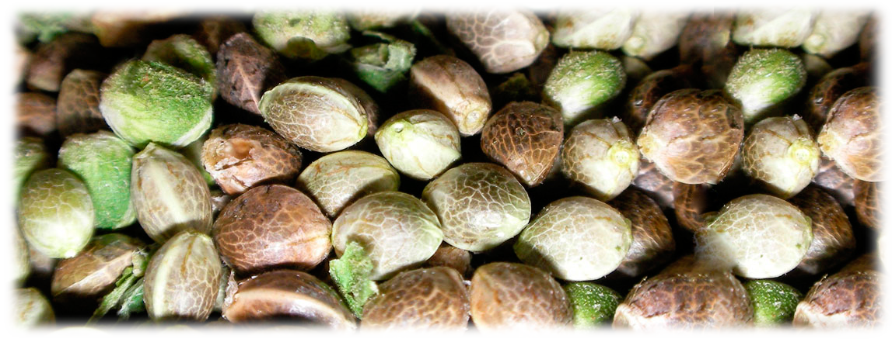

Мир каннабиса огромен, но существуют сорта, которые признаны эталонами качества. Ежегодные конкурсы Cannabis Cup позволяют выделить лучшие из лучших по уровню ТГК, аромату и урожайности. Представляем вам обзор легендарных сортов от ведущих банков семян.
Arjan's Haze #1
Green House SeedsГенетика
Sativa 80% / Indica 20% (G13 & Haze)
Период
77 дней / конец октября
Высота
120 - 150 см (до 3м аутдор)
Урожай
900 - 1500 г
Каннабиноиды
THC 21.44%, CBD 0.4%, CBN 0.64%
Эффект
Мощный психоактивный
Описание: Любимчик многих гроверов, победитель High Times People Cannabis Cup 2004. Сорт отличается феноменальной урожайностью и мощным воздействием.
Выращивание: Лучше всего подходит для открытого грунта, где вкус становится максимально насыщенным. В индоре требует качественного света и удобрений.
Вкус и аромат: Настоящий профиль Сативы — нотки древесины, лесного мха, мускуса с пряными оттенками мяты и перца.
Arjan's Ultra Haze
Green House SeedsГенетика
Neville’s Haze, Cambodian, Laos
Период
13-14 недель / конец октября
Высота
100 - 150 см
Урожай
800 - 1200 г
Каннабиноиды
THC 16.22%, CBD 0.19%, CBN 0.53%
Эффект
Мощный психоактивный
Описание: Двукратный победитель High Times Cannabis Cup (2005, 2006). Отличается сочными, смолистыми соцветиями с яркими оранжевыми волосками.
Выращивание: Теплолюбивый сорт. В помещении цикл занимает около 13-14 недель. Сбор урожая аутдор — середина октября.
Вкус и аромат: Землистые нотки с оттенком древесины. Эффект наступает моментально, идеально подходит для глубоких медитаций.
🌿 Хотите выбрать semena?
Перейдите в наш каталог семян, чтобы найти лучшие автоцветы и феминизированные сорта.
Перейти к semenaм